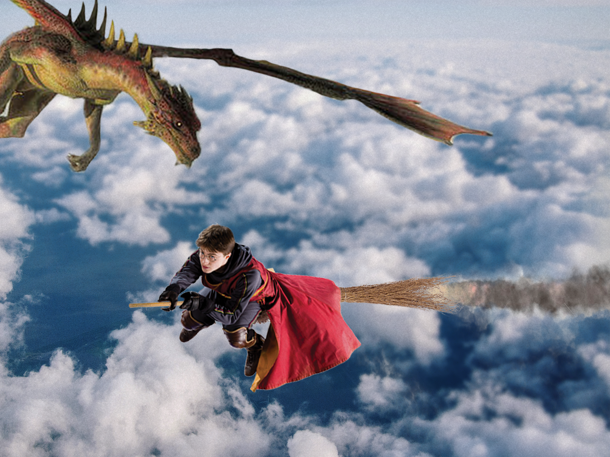
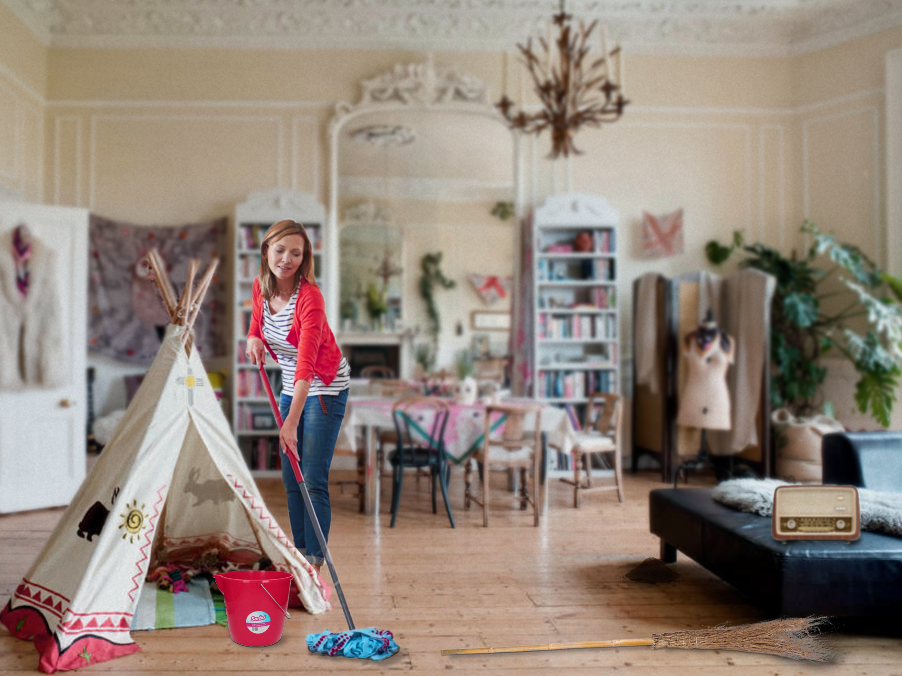
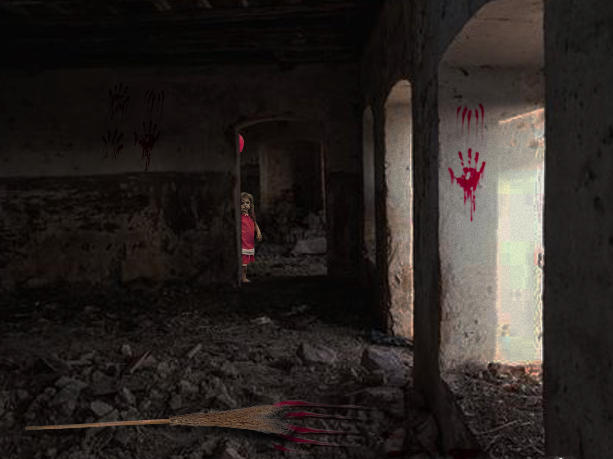

Tijdens dit vak hebben we veel theorie over beeldtaal geleerd, we hebben veel naar beeld gekeken en beelden geanaliseerd. We hebben het gehad over de Semiotiek, de Retorica en de Gestalt. Naast theorie hebben we ook opdrachten gedaan.
Semiothiek opdracht
Bij deze opdracht was het de bedoeling dat we één voorwerp namen en dat we dit object in 3 verschillende sferen en contexten zouden plaatsen. Daarnaast moesten we een indexicaal teken gebruiken om het beeld te versterken. Ik heb gekozen voor een bezem, met eentje in een fantasiewereld, eentje bij een huisvrouw en de laatste in een horrorsetting.




Eindopdracht
De basis voor de stijl was de stijl van het boek 'aandachtsmarketing', dit boek zou ook gelanceerd worden op dezelfde avond als het diner. De letters zijn licht te zien op een donkere achtergrond, een paar letters springen eruit om zo de titel te vormen.
Dit was het uitgangspunt voor de stijl van het diner, gecombineerd met de huisstijl van cmotalk. De basiskleuren voor het diner waren donkergrijs en goud.
De website
Voor de website heb ik het design gemaakt. In de website worden de letters geanimeerd, deze letters bewegen van allerlei kanten en 'rollen' samen tot het juiste woord.
Bij de uitnodiging zat een persoonlijke code, deze kon je gebruiken om de website binnen te komen. Wanneer je deze code invoert, komt jouw naam op het scherm te staan nadat je hebt ingelogd. Na het inloggen kon je de oude aftermovies zien, het programma bekijken en en zien wie er nog meer aanwezig zou zijn.